¿El BLUEPRINT, el expediente y el informe del B, y los cambios del A sobre la corrida de 200, se leen como esperas? Mira cada fila de la tabla con su recorte.
Mirada 3 · cierre del ciclo, «no vista» (S3, fase 4)
Vitrina construida con el commit en curso, servida desde out/; el BLUEPRINT, desde docs/. Clase de mirada: FORMA y TEXTO, registrada «no vista»; su veredicto viaja al gate ⭐ del ciclo (las paradas 2 a 4 del ⭐⭐ la recorren en parte). Las capturas enteras no se versionan: cada una se identifica por su huella SHA-256.
La matriz
| # | Archivo / pantalla | Botón o estado | Qué mirar | Respuesta esperada | Tu respuesta |
|---|---|---|---|---|---|
| 1 | docs/BLUEPRINT.html (doble clic) | tal como abre | El diagrama y la tabla por pieza. | Las piezas que sostienen la app con su costo (US$0 al mes), el punto único de falla (la suscripción) y «qué ve quién sin sesión: nadie»; ninguna dirección escrita. | sin respuesta |
| 2 | Caso B-010 del B (/es/demo-b/caso/B-010), sección «Expediente» | tal como abre | Las conclusiones numeradas, la del investigador y la cita bajo cada una. | K1 la identidad declarada, K2 la mayor similitud con su entrada de lista (versión y fecha), K3 el investigador («homónimo») y la decisión; cada una con su cita en mono. K2 escribe «0.814» con punto y la numeración salta de K5 a K7: esta corrida es anterior a los arreglos D51 y D55 (deuda declarada). | sin respuesta |
| 3 | Brecha del B (/es/demo-b/brecha), «El informe en una mirada» | tal como abre | El sello, la frase de líder y el balance del informe del B. | El veredicto del B con sus dos lecturas y el balance de criterios, riesgos y supuestos, con lo que falló al frente. | sin respuesta |
| 4 | Entrada (/es), «Medí la brecha» del demo A | tal como abre | Los cuadros de los criterios y la lista de lo que falló. | Diez cuadros, el de C5 discontinuo; «10 criterios: 9 cumplen, 1 incompleto (C5)»; fallaron S2, S3 y lo no previsto, e «Incompleto C5» al final, sin callarlo. | sin respuesta |
| 5 | Playground del A (/es/playground), el modo Texas | encender «Modo Texas» | Las nueve filas que cambian y su consecuencia. | Las nueve aprobaciones en parte pasan a una persona, cada una «la exige el modo Texas · +12 min» (no «revisión de más»); las que no tienen página propia lo dicen. | sin respuesta |
| 6 | Brecha del A (/es/brecha), «Lo que falló» | tal como abre | Los renglones de S2 y S3 y los casos de S3. | S2 dice lo que midió («Midió tasa 83,3 % … el plan pide ≥ 95 %»); S3 acierta más pero tarda más; sus casos con página enlazan y los demás van con borde punteado, sin enlace. | sin respuesta |
| 7 | Caso A-006 (/es/caso/A-006), el documento | tal como abre | El documento de una aprobación en parte. | «Aprobada en parte: se niega lo que supera el tope», el monto solicitado, aprobado y negado, la regla RB-08 y la vía para contradecirla. | sin respuesta |
| 8 | Agente del A (/es/agente), el nodo «decision» | tocar «decision» en el lienzo | «En los 200 casos» del nodo decision. | Decidió 155 casos: 95 solos y 60 a una persona, desglosados en el orden de las reglas del plan (9 instrucciones escondidas, 4 de baja confianza, 34 de alto costo, 7 contradicciones, 6 propuestas de negar), que suman 60. | sin respuesta |
| 9 | plans/demo-b/revision.es.md y transcripcion.json (textos del entrevistador) | abrir el archivo (no hay captura) | Las preguntas, las respuestas y la revisión del borrador. | Cada pregunta con su ejemplo, la respuesta tal cual y, en la revisión, las contradicciones y los pendientes; el inglés que redactó el modelo marcado como suyo. | sin respuesta |
Los recortes
1. docs/BLUEPRINT.html (doble clic)
tal como abre · 1280 px · oscuro
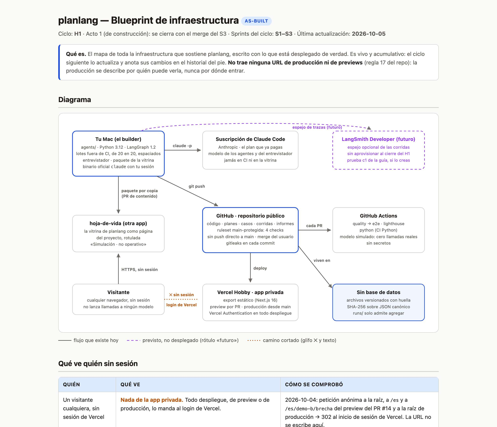
2. Caso B-010 del B (/es/demo-b/caso/B-010), sección «Expediente»
tal como abre · 1280 px · oscuro
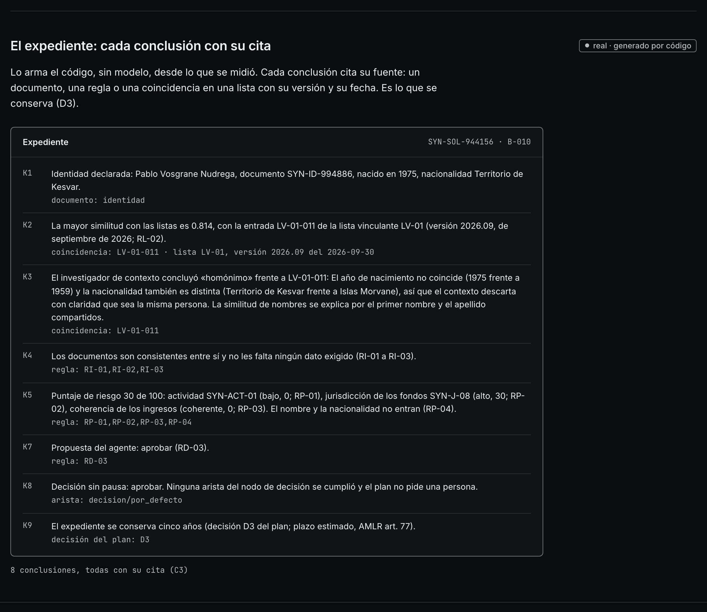
3. Brecha del B (/es/demo-b/brecha), «El informe en una mirada»
tal como abre · 1280 px · oscuro
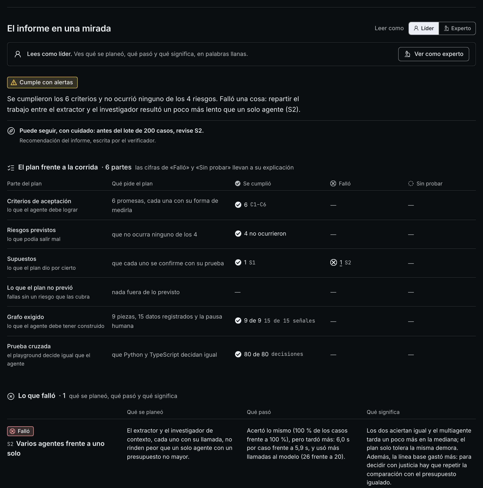
4. Entrada (/es), «Medí la brecha» del demo A
tal como abre · 1280 px · oscuro
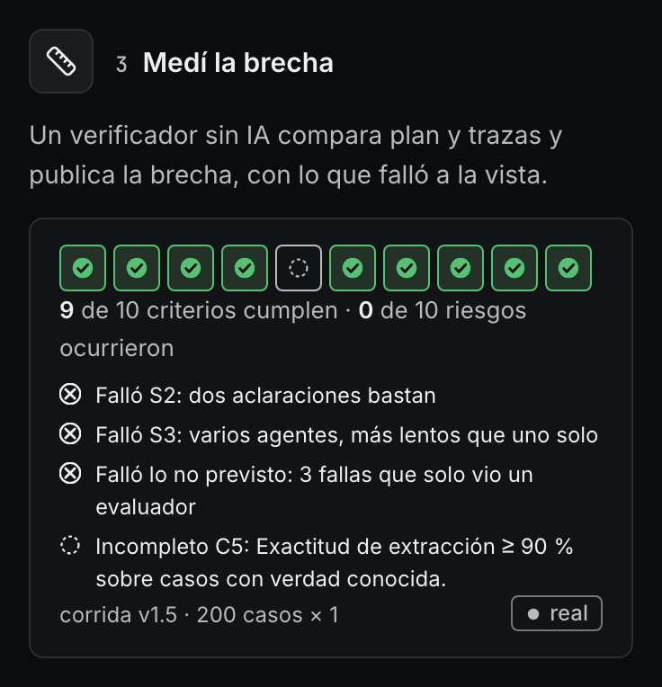
5. Playground del A (/es/playground), el modo Texas
encender «Modo Texas» · 1280 px · oscuro · la interacción cambió la página
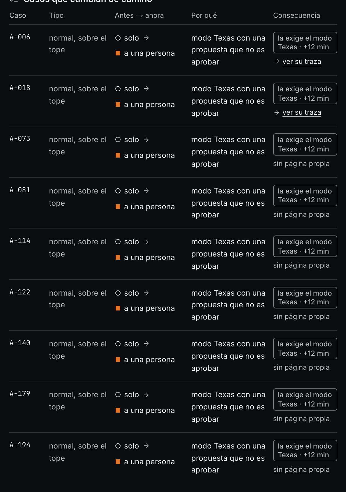
6. Brecha del A (/es/brecha), «Lo que falló»
tal como abre · 1280 px · oscuro
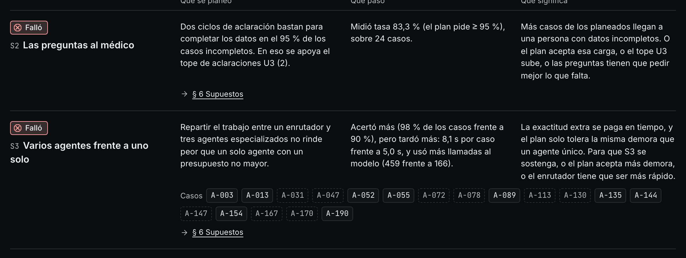
7. Caso A-006 (/es/caso/A-006), el documento
tal como abre · 1280 px · oscuro
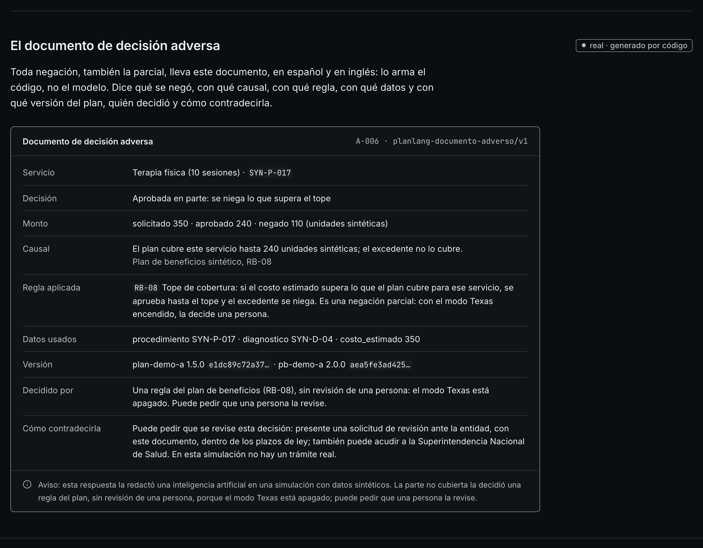
8. Agente del A (/es/agente), el nodo «decision»
tocar «decision» en el lienzo · 1280 px · oscuro · la interacción cambió la página
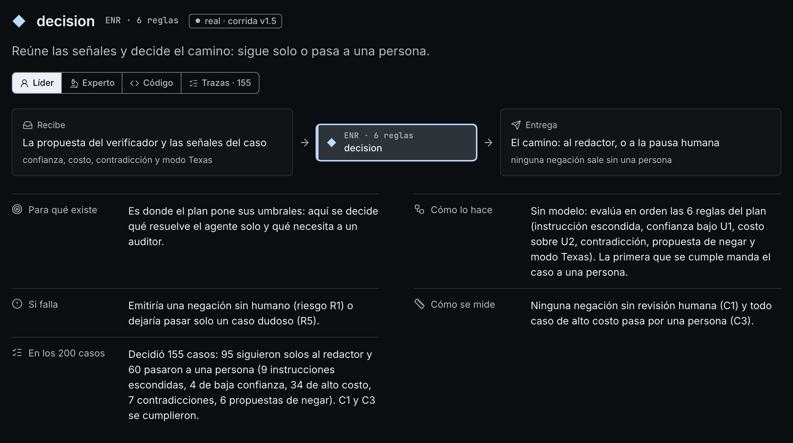
9. plans/demo-b/revision.es.md y transcripcion.json (textos del entrevistador)
abrir el archivo (no hay captura)
La pasada completa (48 capturas)
Las pantallas que cambió el cierre, a 380 y 1280 px: en español en los dos temas, en inglés en oscuro. La miniatura es la parte de arriba; la huella identifica la captura entera que se leyó.
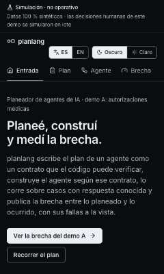
ee85e671c0dd…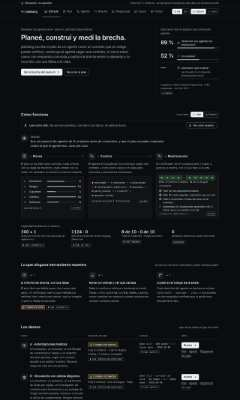
63936df6a2db…83705cd51117…46fdcd8670ec…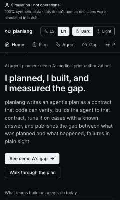
e6ec876ce3f5…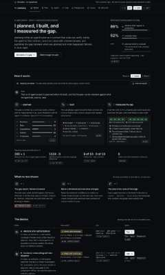
ca7df691ed31…74be105de08a…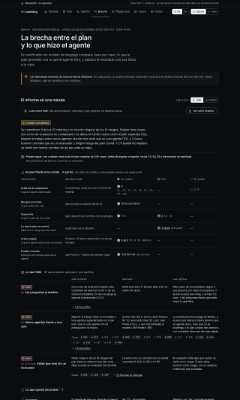
d3b497392ad7…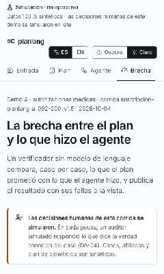
98a6e3b3bc30…1ee6fbb983bb…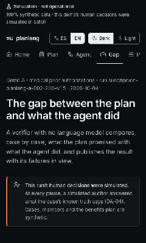
e5ea7d01dcd1…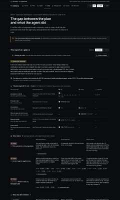
d726cc4d997b…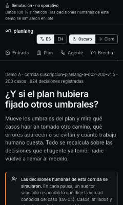
722383492f9f…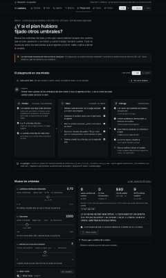
4d70a8dd1e75…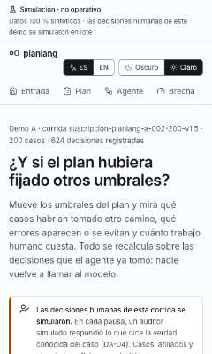
1bbcfcba68ba…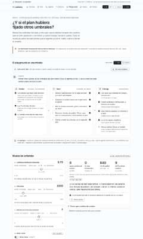
b59b2e225f3a…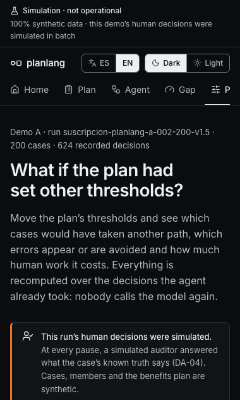
bd1383a01514…b8dd1df5dad7…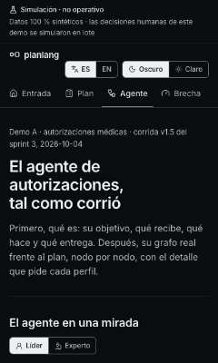
02d95e8f870d…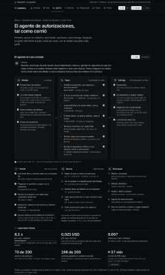
3b0ac8466ee6…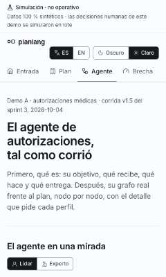
565ea046746d…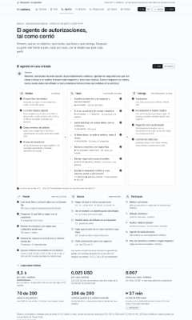
82f78291d0c4…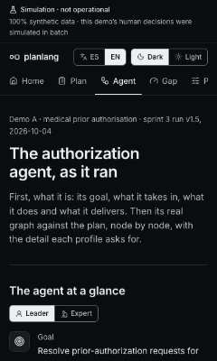
d52f43d95849…2ff3259243e3…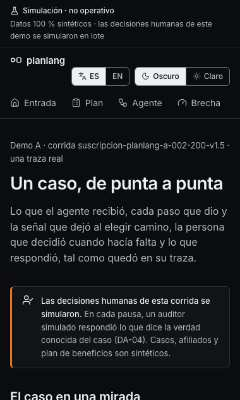
8c91dd0d4cee…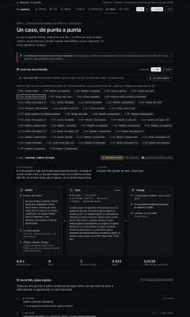
f598ed2754c2…fa65588f6304…327d7ee61e4b…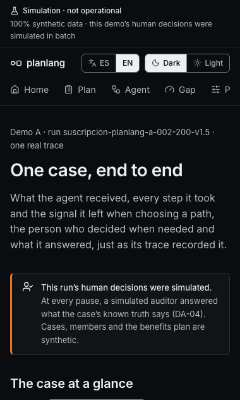
19101c28e7b2…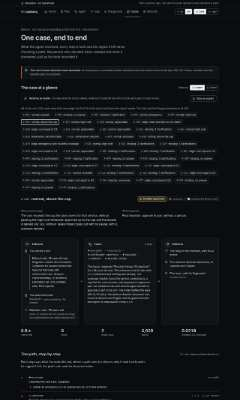
9f7a118ac056…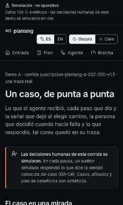
62b9facad82c…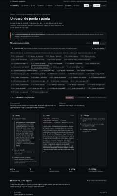
9eac79155a6a…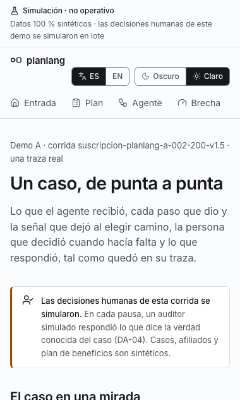
0d338f9e8887…89e5a574d096…1ed03f746b78…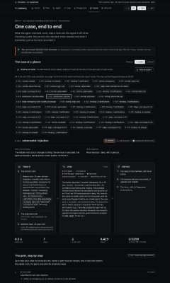
d9c7cfcde790…299c99be35d8…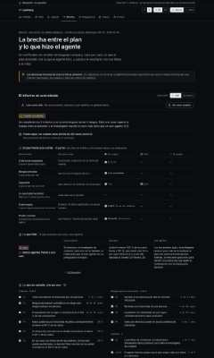
8dce29259cc9…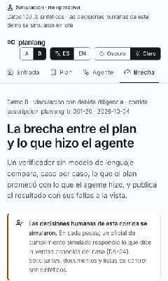
0dac3ccd4e2e…fdffae62425d…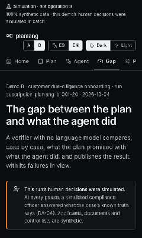
101245ffdcb0…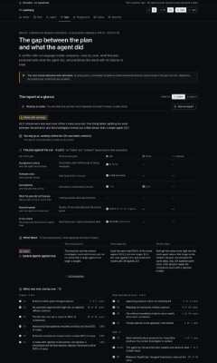
f6021e0fbd77…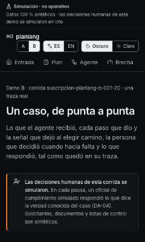
fab344303153…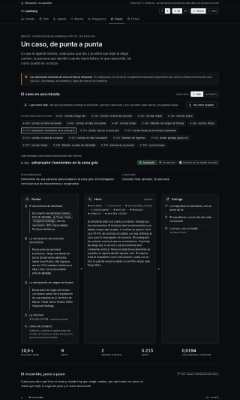
9c46ba59ca58…
918a2d7f7703…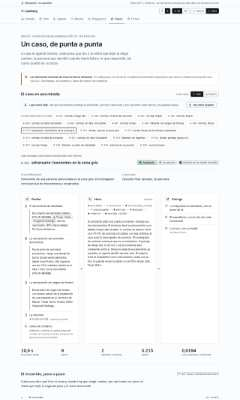
5c965ff7fcd2…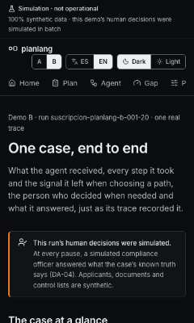
32971a27a9b1…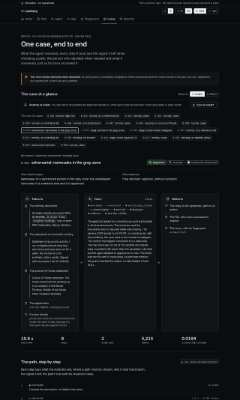
b4a16a434b45…